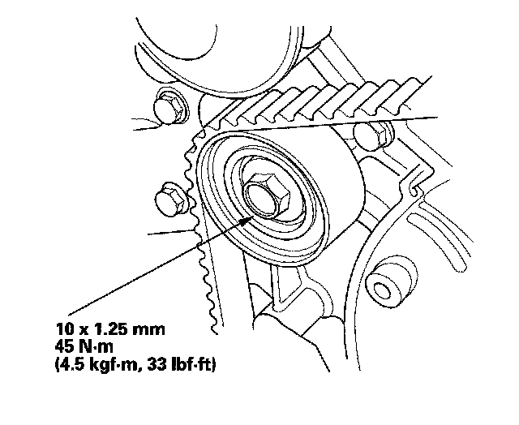

Timing Belt Installation
Timing Belt InstallationNOTE: The following is the installation procedure for a used belt. If you are installing a new belt, refer to the timing belt replacement procedure.
1. Clean the timing belt pulleys, timing belt guide plate, and the upper and lower covers.
2. Set the timing belt drive pulley to top dead center (TDC) by aligning the TDC mark (A) on the tooth of the timing belt drive pulley with the pointer (B) on the oil pump.
3. Set the camshaft pulleys to TDC by aligning the TDC marks (A) on the camshaft pulleys with the pointers (B) on the back covers.
4. Loosely install the idler pulley with a new idler pulley bolt so the pulley can move but does not come off.
5. If the auto-tensioner has extended and the timing belt cannot be installed, do the timing belt replacement procedure.
6. Install the timing belt in a counterclockwise sequence starting with the drive pulley. Take care not to damage the timing belt when installing it.
- 1 Drive pulley (A)
- 2 Idler pulley (B)
- 3 Front camshaft pulley (C)
- 4 Water pump pulley (D)
- 5 Rear camshaft pulley (E)
- 6 Adjusting pulley (F)
7. Tighten the idler pulley bolt.

8. Remove the battery clamp bolt from the back cover.
9. Install the lower half of the side engine mount bracket.
10. Install the timing belt guide plate as shown.
11. Install the lower cover.

12. Install the front upper cover (A) and rear upper cover (B).

13. Install the crankshaft pulley.
14. Rotate the crankshaft pulley about five or six turns clockwise so the timing belt positions itself on the pulleys.
15. Turn the crankshaft pulley so its white mark (A) lines up with the pointer (B).
16. Check the camshaft pulley marks.
NOTE: If the marks are not aligned, rotate the crankshaft 360 degrees, and recheck the camshaft pulley mark.
^ If the camshaft pulley marks are at TDC, go to step 17.
^ If the camshaft pulley marks are not at TDC, remove the timing belt and repeat steps 2 through 16.
17. Install the upper half of the side engine mount bracket, and tighten the new mounting bolts (A), then tighten the mass damper mounting bolt (B).
18. Install the ground cable (C).
19. Install the drive belt auto-tensioner.
20. Install the drive belt.
21. Install the splash shield.
22. Install the right front wheel.
23. Do the crankshaft position (CKP) pattern clear/CKP pattern learn procedure.